NEW MEDIA / AR SERIES
対話
TAIWA / DIALOGUE
Scroll
概念
CONCEPT
インスピレーション
調査 — 茶館
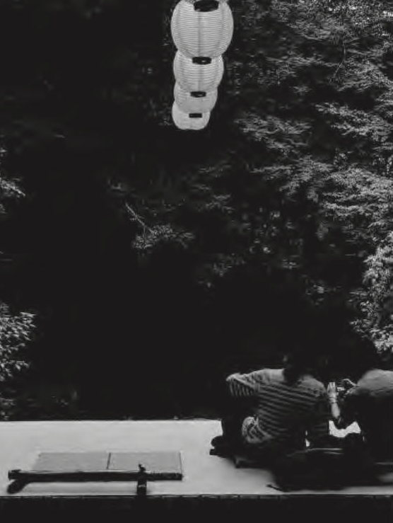
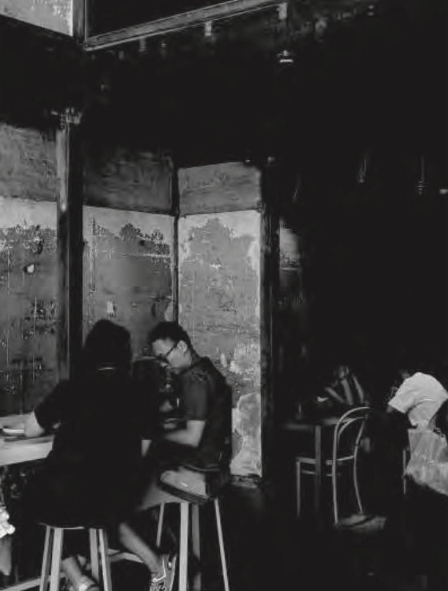
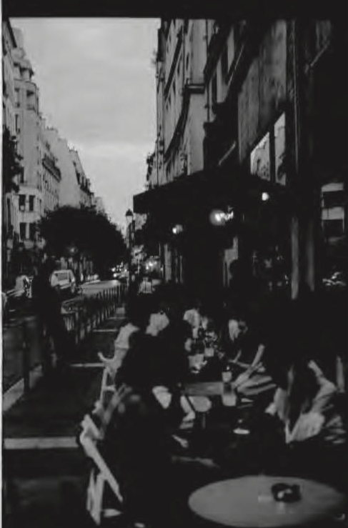
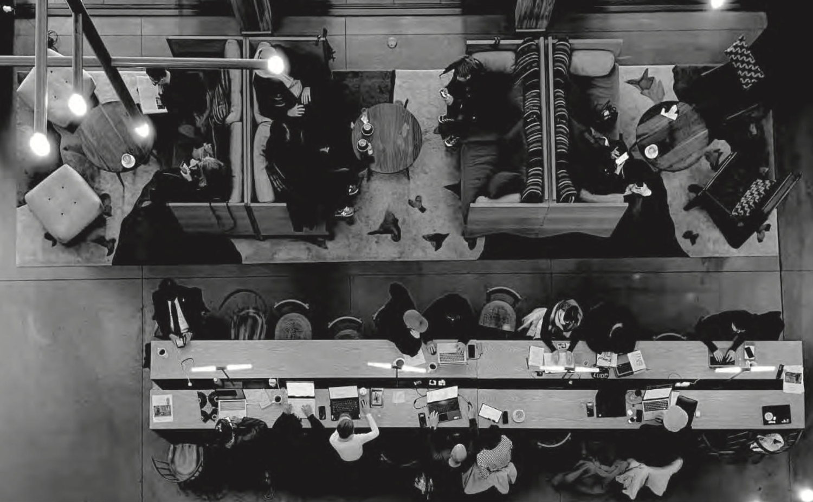
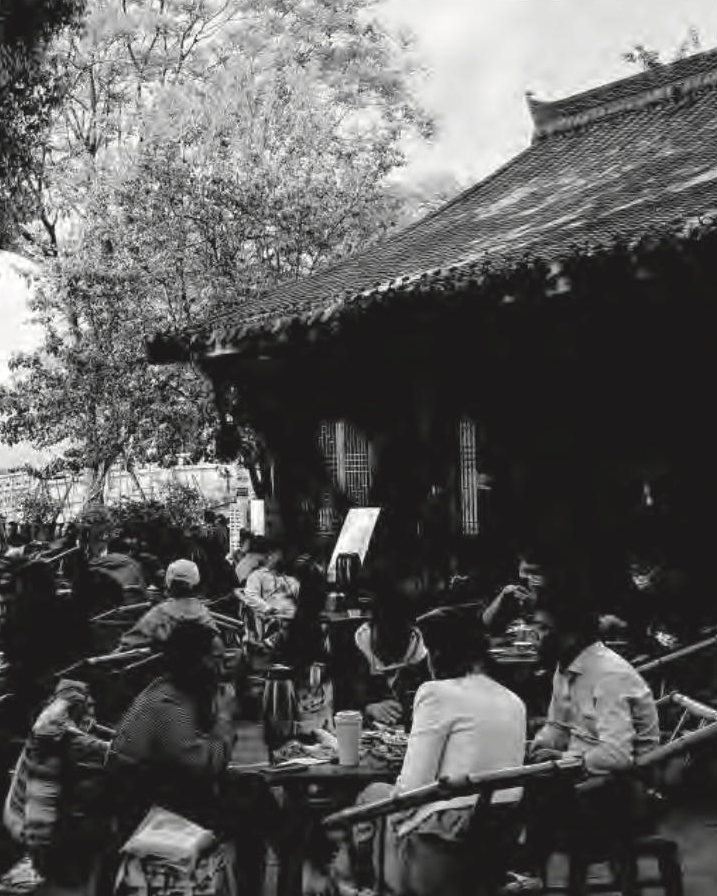
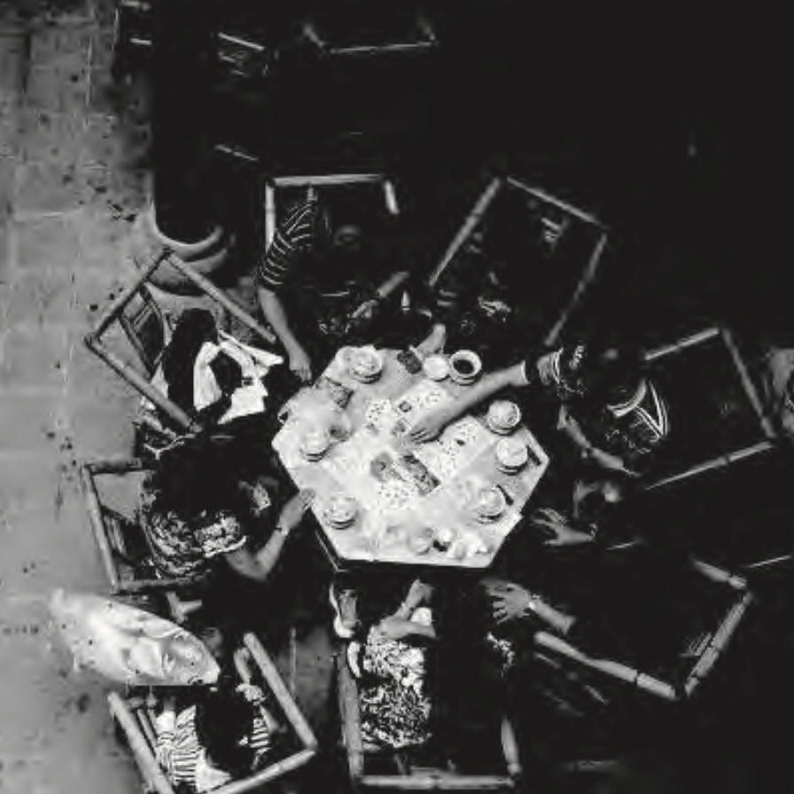
抽象 — 円と方
01
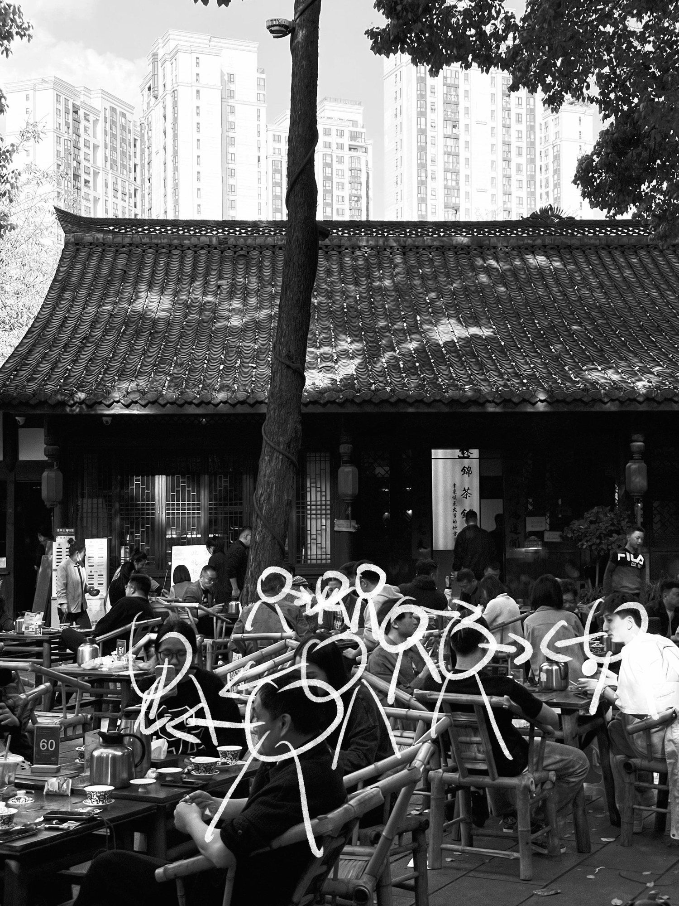
02
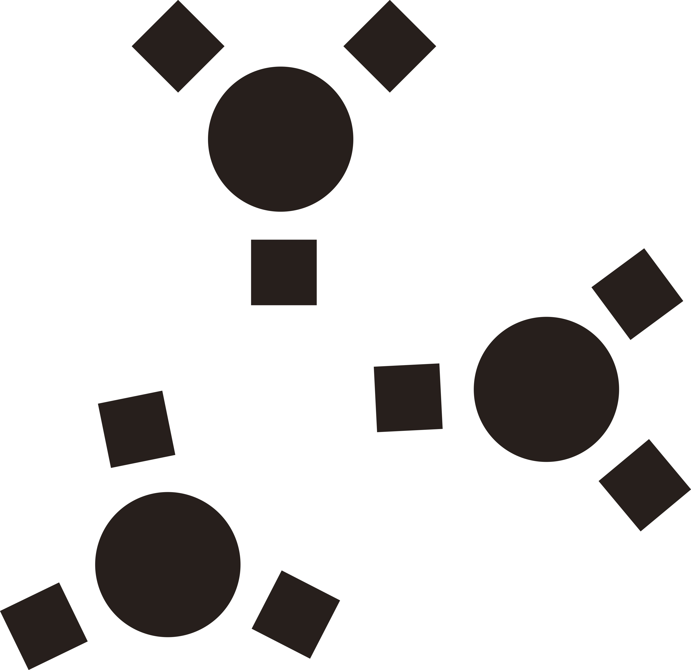
03
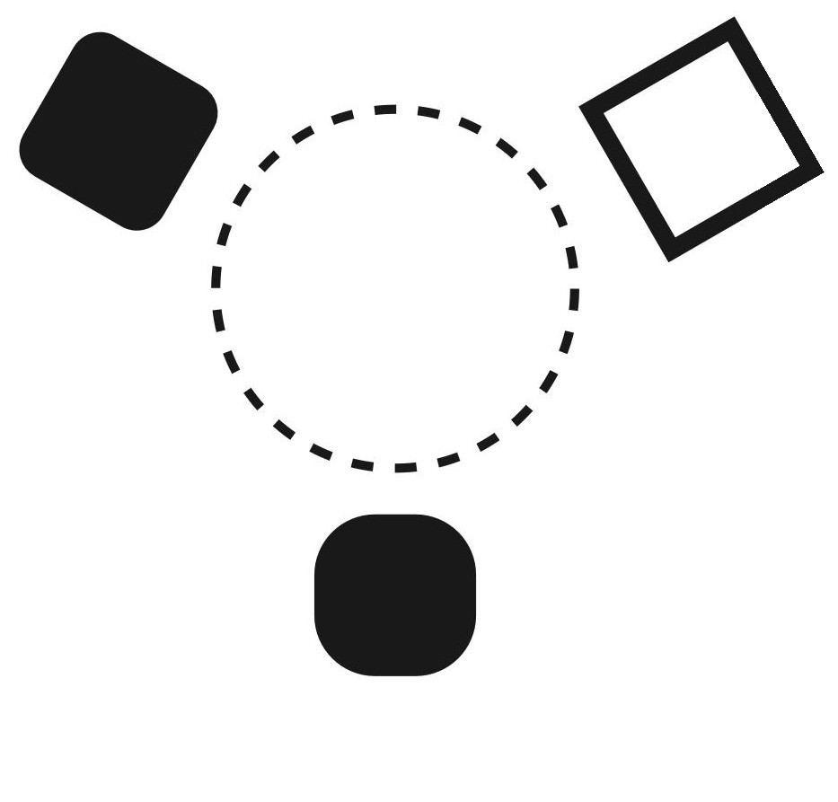
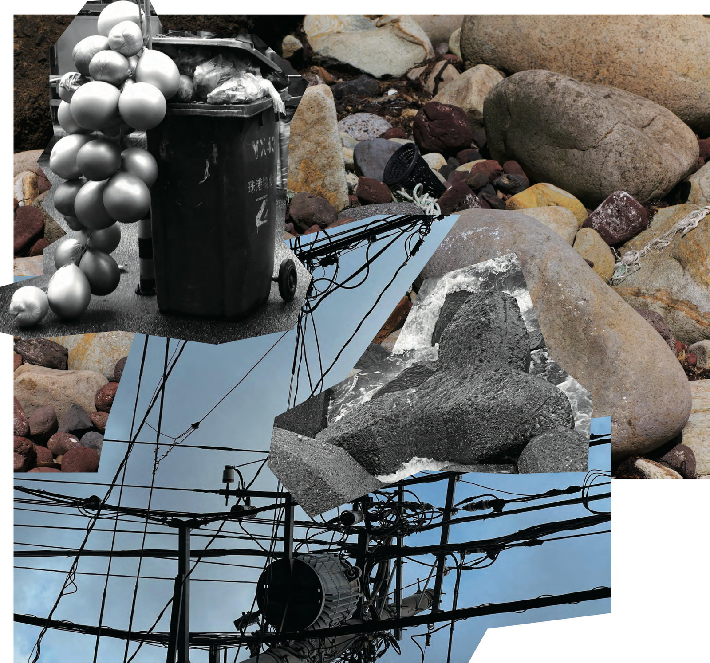
卓の設計 — 関係図
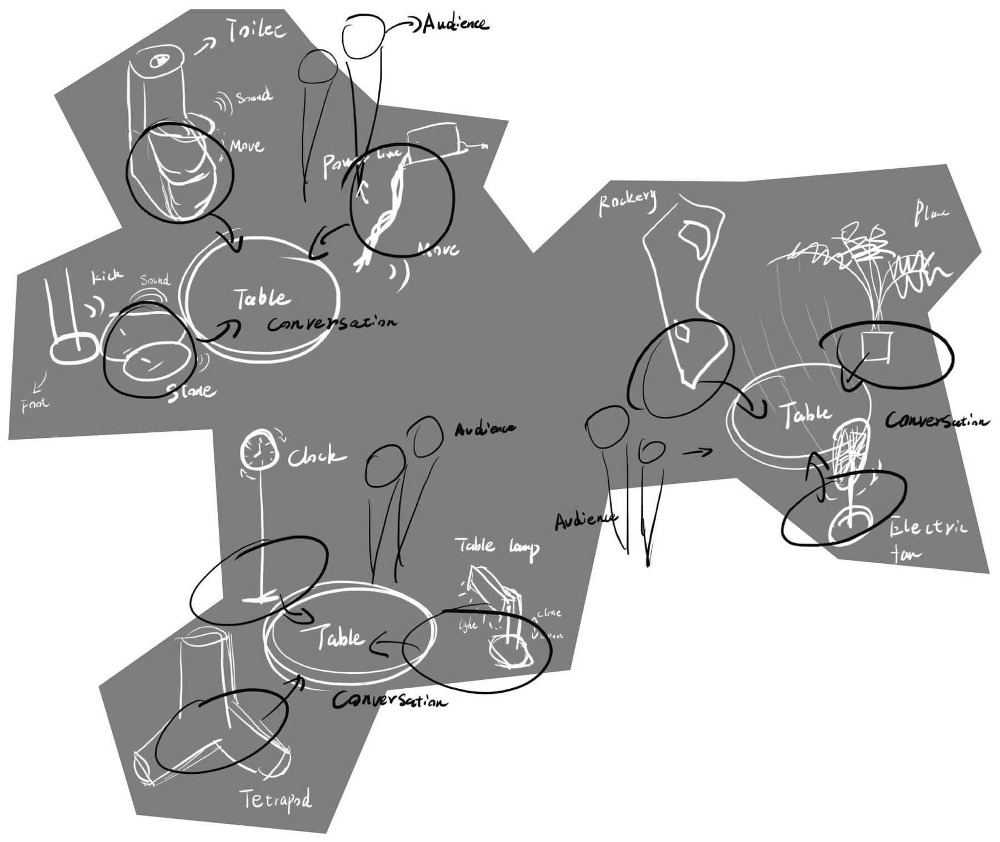
Table
Conversation
Audience
SoundMoveKick
FootLightCloseOpen
荒唐 — 四つの荒唐さ
- 01
- 02
- 03
- 04
展示 — 五つの卓
映像